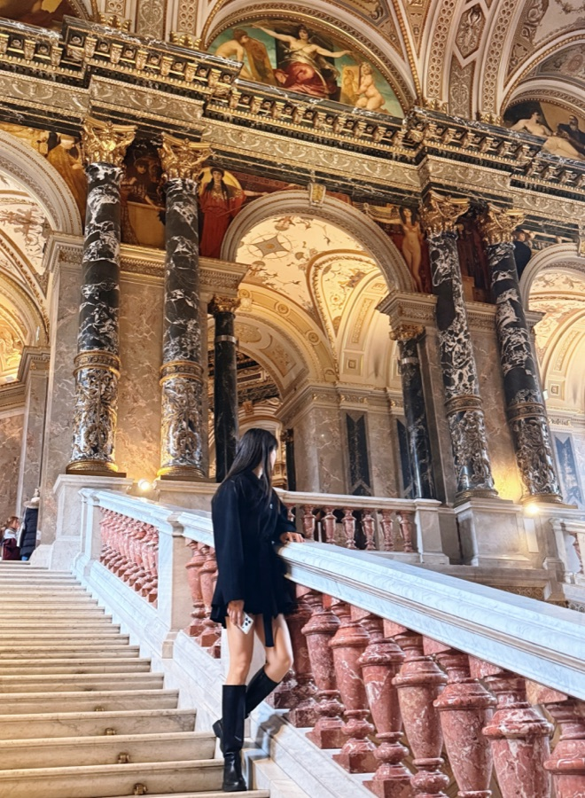

LANGUAGE & ARTIFICIAL INTELLIGENCE
Eunjin Kim
<소개글을 입력하세요>

Publications
About & background
I am an integrated master's and PhD student in Computer Engineering at Chungbuk National University, advised by Young-Seob Jeong. My research interests include large language models, prompt sensitivity, contrastive learning, and AI robustness.
Education
2023 — Present
Integrated Master and PhD course
Computer Engineering
Chungbuk National University
2018 — 2023
B.S. in Computer Engineering
Chungbuk National University
Experience & recognition
2022 — 2023
Undergraduate Researcher
Data analysis & Artificial Intelligence Lab
Chungbuk National University
2024 · 2025 · 2026
Academic Excellence Scholarship
Chungbuk National University